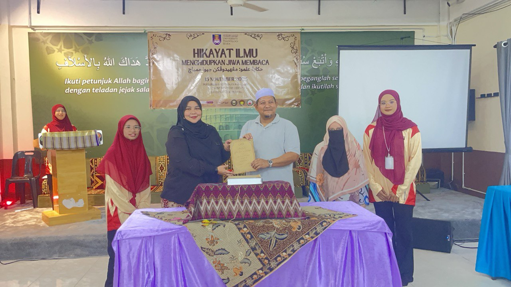

Program Leader — Community Engagement Program 'Hikayat Ilmu: Menghidupkan Jiwa Membaca'
UiTM Kedah — 2025
Planned and coordinated the SULAM program titled “Hikayat Ilmu: Menghidupkan Jiwa Membaca” at a local orphanage. Led student engagement activities promoting literacy, designed interactive booths, and facilitated knowledge-sharing sessions to instill reading culture among youth.
Evidence:
